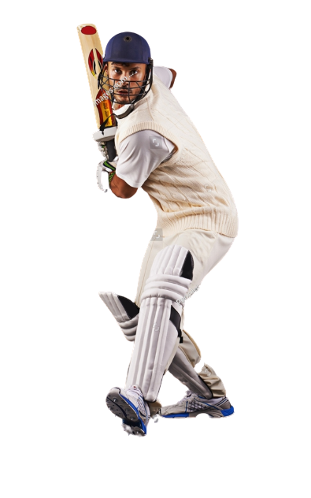
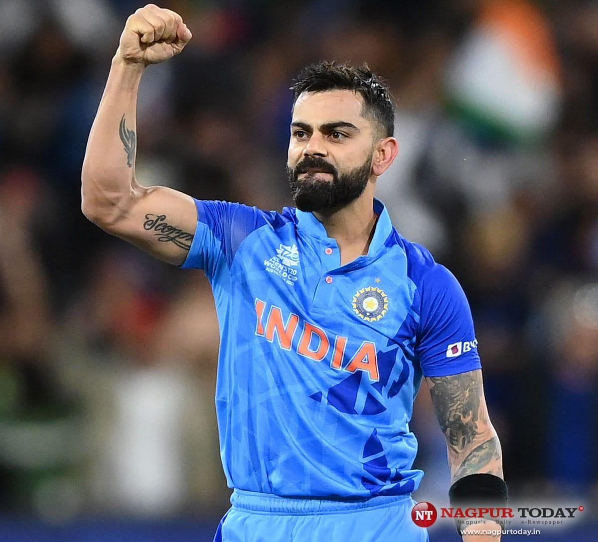
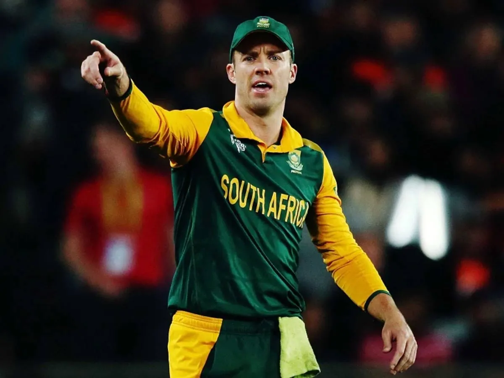
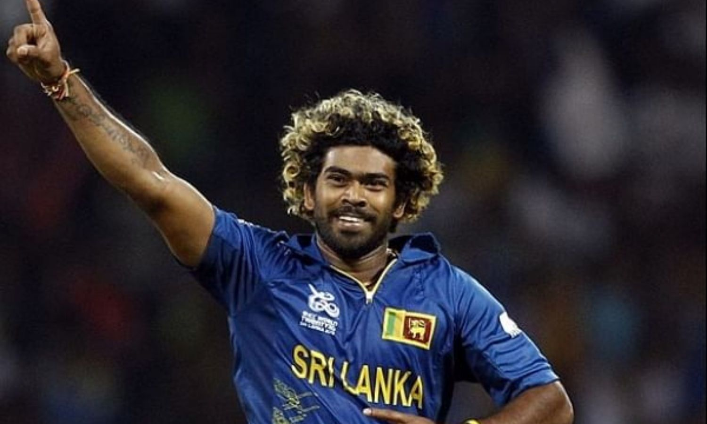

Cricket is a bat-and-ball sport played between two teams, each with eleven players. It involves scoring runs by hitting a ball and running between wickets while the opposing team fields and tries to dismiss batsmen. Matches vary in length and format, including Tests, ODIs, and T20s. Cricket has a rich global history, cultural significance, and intense rivalries.

Popular Sportmen In Cricket

Virat Kohli
Virat Kohli is an Indian international cricketer and the former captain of
the Indian national cricket team. Widely regarded as one of the greatest batsmen in the history of
the sport, he plays for Royal Challengers Bangalore in the IPL and Delhi in domestic cricket.

Ab-De-Villiers
Abraham Benjamin de Villiers is a former South African international
cricketer. AB de Villiers was named as the ICC ODI Player of the Year three times during his 15-year
international career and was one of the five Wisden cricketers of the decade at the end of 2019.
Ms Dhoni
Mahendra Singh Dhoni is widely considered one of greatest cricket
captains, wicket-keeper-batsman. He was captain of the Indian national team in limited-overs formats
from 2007 to 2017 and in Test cricket from 2008 to 2014. Dhoni is the

Lasith Malinga
Separamadu Lasith Malinga is a Sri Lankan former cricketer who is widely
regarded as one of the greatest limited overs bowlers of all time. Malinga was commonly used as a
specialist death bowler, and captained the Sri Lanka national cricket team to the 2014 T20 World Cup
title.
Rules of Crickets
Rules for Cricket Players
A cricket team consists of 11 players. Each team takes turns to bat and bowl.
A cricket match is divided into innings. Each team gets a chance to bat and bowl. In limited-overs
formats, each team usually gets 50 overs to bat.
The team batting tries to score runs by hitting the ball and running between the wickets. A run is
scored each time the batsmen successfully cross each other while running.
The team bowling aims to dismiss the batsmen and limit the runs scored. The bowler delivers the ball
to the batsman, who tries to hit it.
The batsmen stand at opposite ends of the pitch and try to score runs. They can also hit the ball to
the boundary to score four runs, or over the boundary on the full to score six runs.
In some matches, teams can challenge on-field decisions using DRS, which includes ball-tracking
technology and other tools to review decisions like lbw and catches.


.png)